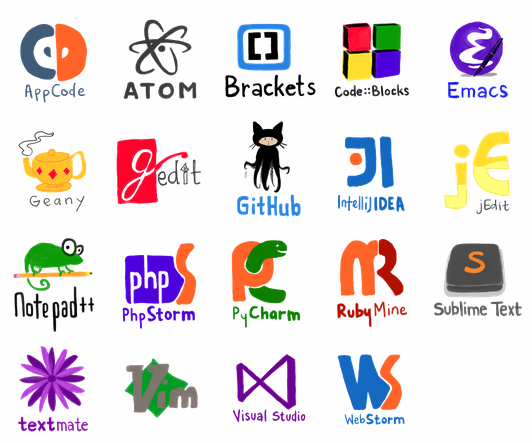
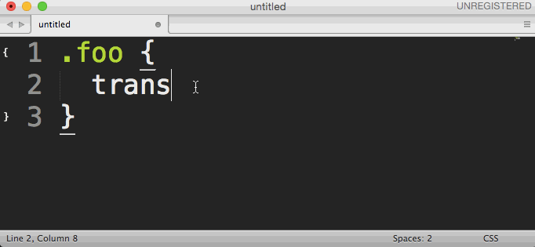
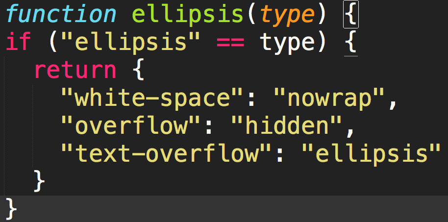

武大头的CSS 传奇
武大头是谁？
心机婊
Video
故事是这样的
有一天……
目录
- 第一日：欲善其事，先利其器（书写规范）
- 第二日：兼纳百家，有容乃大（再谈重置）
- 第三日：江湖儿女，名号在外（前缀当先）
- 第四日：左右开弓，谁主沉浮（闭合浮动）
- 第五日：前后并济，可攻可受（前后处理）
第一日
欲善其事，先利其器
书写规范

书写规范
CSS 创作指南
- 使用 2 个空格缩进
- 使用 Unix 风格换行符(LF)
- 删除行尾多余的空格
- 文件末尾增加一个空行
书写规范……How?
Sublime Text
- 新建工程 → xxx.sublime-project 文件
- 问题：只有 Sublime Text 支持
{
"folders": [{
"path": ".",
"folder_exclude_patterns": ["node_modules", "_site"]//排除目录
}],
"settings": {
"tab_size": 4,
"translate_tabs_to_spaces": true,//tab 转换为空格
"ensure_newline_at_eof_on_save": true,//保存时末尾自动增加一个空行
"trim_trailing_white_space_on_save": true//删除行尾多余的空格
}
}
书写规范……How?
EditorConfig（推荐）
# css-creating coding style
root = true
# 为所有文件设置风格
[*]
charset = utf-8
indent_style = space
indent_size = 2
end_of_line = lf
trim_trailing_whitespace = true
insert_final_newline = true
# 为 Markdown 文件保留行尾空格
[*.md]
trim_trailing_whitespace = false
书写规范……How?
EditorConfig支持的编辑器
第二日
兼纳百家，有容乃大
CSS Reset
统一浏览器默认样式
CSS Reset
* {
margin: 0;
padding: 0;
}
- 简单
- 副作用大
- 效率？
CSS Reset
按需 reset 为 0
- html,dt,li,code 默认没有边距
html, body, dl, dd, dt,
ul, ol, li,
h1, h2, h3, h4, h5, h6, pre, code,
form, fieldset, legend, input, textarea, optgroup,
p, blockquote, figure, hr, menu, dir,
thead, tbody, tfoot, th, td {
margin: 0;
padding: 0;
}
Normalize.css
- 保护有用的浏览器默认样式, 而不是完全去掉它们
/**
* Remove default margin.
*/
body {
margin: 0;
}
Normalize.css
- 修复浏览器自身的 Bug 并保证夸浏览器的一致性
- 模块化，按需定制
Neat.css
Reset + Normalize
Neat.css
人性化的细节处理
- textarea 默认只能垂直拖动，防止宽度改变破坏布局。
- small 元素字号不小于12px，汉字小于 12px 不易阅读。
- label 元素默认光标设为「手型」，暗示此处可点击。
textarea {
resize: vertical;
}
small {
font-size: 85.7%; /* 12/14=0.8571428571 */
}
label {
cursor: pointer;
}
Neat.css
移动设备优化
iPhone 横屏时默认会放大文字
html {
-ms-text-size-adjust: 100%;
-webkit-text-size-adjust: 100%;
text-size-adjust: 100%;
}
Reset Box-sizing
问题？不能继承
*, *:before, *:after {
-webkit-box-sizing: border-box;
-moz-box-sizing: border-box;
box-sizing: border-box;
}
Reset Box-sizing
更好的：
html {
-webkit-box-sizing: border-box;
-moz-box-sizing: border-box;
box-sizing: border-box;
}
*, *:before, *:after {
-webkit-box-sizing: inherit;
-moz-box-sizing: inherit;
box-sizing: inherit;
}
排版
字体误区
- 宋体非宋体，黑体非黑体
- 宋体和黑体都是指一类字体
- Windows: 中易宋体(SimSun)，Mac: 华文宋体(STSong)
- Windows: 中易黑体(SimHei)，Mac: 华文黑体(STHeiti)
排版
Font-family 最佳实践
- 永远不要只写中文字体
- 西文字体保证在中文字体前面
- 字体顺序遵循 Mac →Linux→ Windows
- 不要 PSD 里什么字体就设定什么 font-family
排版
Font-family 最佳实践（全真派）
body {
font-family: sans-serif;
}
Font-family 最佳实践（古墓派）
body { font-family:'helvetica neue', arial,
'hiragino sans gb', stheiti,
'microsoft yahei',
'wenquanyi micro hei',
sans-serif;
}
中文排版解决方案
第三日
江湖儿女，名号在外
前缀问题
农耕火种

手写前缀
问题?
.foo {
transition: width .3s;
-webkit-transition: width .3s;
-moz-transition: width .3s;
-ms-transition: width .3s;
-o-transition: width .3s;
}
.foo {
transition: width .3s; /*标准属性应该放到最后*/
-webkit-transition: width .3s;
-moz-transition: width .3s;
-ms-transition: width .3s; /*IE 不用前缀*/
-o-transition: width .3s;
}
工业革命
Emmet(Zen Coding)

问题?
成全兼容，恶心自己
CSS 预处理器(mixin)
//Scss
@mixin transition($value) {
-webkit-transition: $value;
-moz-transition: $value;
-o-transition: $value;
transition: $value;
}
.foo {
@include transition(width .3s);
}
CSS 预处理器(mixin)
Stylus
//Stylus
transition(value) {
-webkit-transition: value;
-moz-transition: value;
-o-transition: value;
transition: value;
}
.foo {
transition(width .3s);
//或者
transition: width .3s;
}
CSS 预处理器(mixin)
问题？
.foo {
-webkit-transition: width .3s;
-moz-transition: width .3s;
-o-transition: width .3s;
transition: width .3s;
}
.bra {
-webkit-transition: margin .6s;
-moz-transition: margin .6s;
-o-transition: margin .6s;
transition: margin .6s;
}
CSS 预处理器(mixin)...
.foo .bar {
-webkit-transition: width .3s;
-moz-transition: width .3s;
-o-transition: width .3s;
transition: width .3s;
}
Autoprefixer
- 只用写标准的 CSS 属性
- 不仅可以增加前缀，还可以批量删除
第四日
左右开弓，谁主沉浮
闭合浮动
.clearfix {
*zoom: 1;
}
.clearfix:after {
clear: both;
}
.clearfix:before,
.clearfix:after {
content: ' ';
display: table;
}
闭合浮动
问题?
...
...
...
...
...
闭合浮动
小二，能不能来一斤情怀？
.foo{
clear: fix;
/* or */
+clear: fix;
}
CSS Grace
.foo {
clear: fix;
overflow: hidden; /* 已经可以闭合浮动了 */
}
.foo {
overflow: hidden; /* 已经可以闭合浮动了 */
}
第五日
前后并济，可攻可受
从预处理器到后处理器
什么是CSS后处理器？
- CSS 压缩：clean-css
- 自动加前缀：Autoprefixer（基于 PostCSS）
- CSS 属性排序：CSScomb
- Rework，取代 Stylus
- PostCSS
- 更易扩展的 API
- 更好用的 Source Map
- 保留空白符
预处理与后处理器的关系

预处理与后处理器的关系

预处理与后处理器的关系
后处理器特性
- CSS 原生语法，学习成本低
- 支持预处理器，完善整个 CSS 工作流
CSS Grace
position: center
.foo {
position: center;
width: 400px;
height: 310px;
}
CSS Grace
CSS Grace
后处理器特性
把逻辑交给 JS
后处理器特性
面向未来（CSS Polyfill）
CSS Grace 展望
//多行溢出显示省略号
.foo {
text-overflow: ellipsis;
max-lines: 4;
}
//自定义三角属性
.bar {
triangle: top 10px red;
triangle: top-right 20px #ccc;
}
工作流
Gulp
var gulp = require('gulp');
var rename = require('gulp-rename');
var postcss = require('gulp-postcss');
var cssgrace = require('cssgrace');
gulp.task('default', function () {
var processors = [
cssgrace
];
return gulp.src('src/*.css')
.pipe(postcss(processors))
.pipe(rename('gulp.css'))
.pipe(gulp.dest('build'))
});
gulp.watch('src/*.css', ['default']);